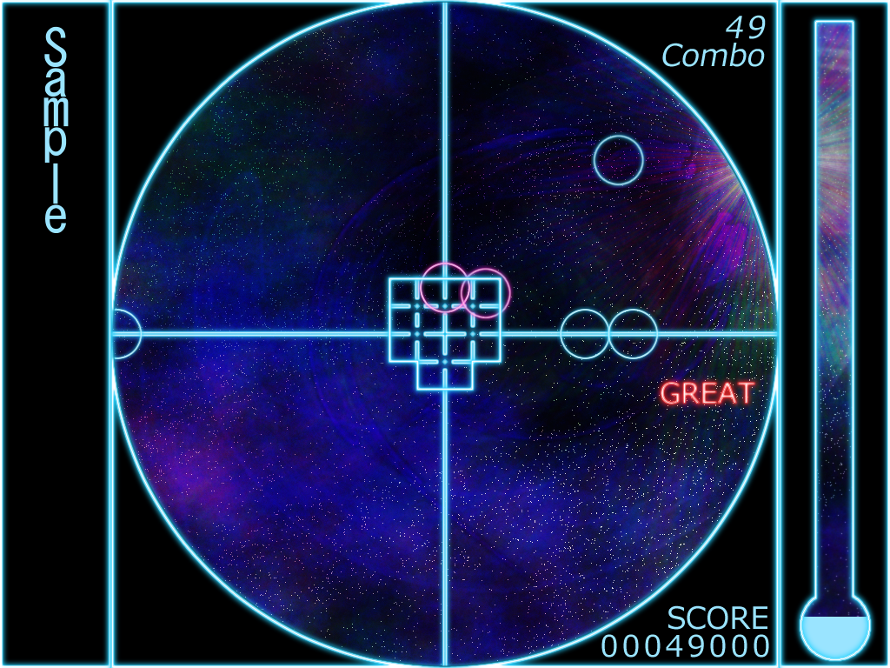

RhythmGame
概要
キーボードかジョイスティックで遊べるシンプルなリズムゲームです。
Windows上で動作します。
楽曲は昔見様見真似で作った歌詞のない1曲のみです。
動作環境
| ・プラットフォーム | Windows OSの動作するPC |
| ・OS | Windows 7以降 |
| ・必須コンポーネント | Microsoft Visual C++ 2015 x86 Redistributable |
ダウンロード・インストール
下記リンクからダウンロードし、解凍したフォルダを任意のディレクトリに配置してください。
START.exeが実行ファイルです。
アンインストールはフォルダごと削除してください。
現在はアルファ版です。多くの不具合が存在しているため、利用は自己責任で行ってください。
RhythmGame ダウンロード
GitHub
ひとまず半年以上前にリファクタリングした時点までプッシュしておいた。
いつかちゃんと作り直したい……。